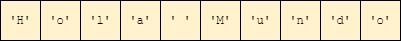

!pip3 install tutormagic
%load_ext tutormagic
Requirement already satisfied: tutormagic in c:\users\usuario\anaconda3\lib\site-packages (0.3.1)
Requirement already satisfied: jupyter>=1.0 in c:\users\usuario\anaconda3\lib\site-packages (from tutormagic) (1.0.0)
Requirement already satisfied: qtconsole in c:\users\usuario\anaconda3\lib\site-packages (from jupyter>=1.0->tutormagic) (5.1.0)
Requirement already satisfied: jupyter-console in c:\users\usuario\anaconda3\lib\site-packages (from jupyter>=1.0->tutormagic) (6.4.0)
Requirement already satisfied: notebook in c:\users\usuario\anaconda3\lib\site-packages (from jupyter>=1.0->tutormagic) (6.3.0)
Requirement already satisfied: ipykernel in c:\users\usuario\anaconda3\lib\site-packages (from jupyter>=1.0->tutormagic) (5.5.5)
Requirement already satisfied: nbconvert in c:\users\usuario\anaconda3\lib\site-packages (from jupyter>=1.0->tutormagic) (6.1.0)
Requirement already satisfied: ipywidgets in c:\users\usuario\anaconda3\lib\site-packages (from jupyter>=1.0->tutormagic) (7.6.3)
Requirement already satisfied: traitlets>=4.1.0 in c:\users\usuario\anaconda3\lib\site-packages (from ipykernel->jupyter>=1.0->tutormagic) (5.0.5)
Requirement already satisfied: ipython>=5.0.0 in c:\users\usuario\anaconda3\lib\site-packages (from ipykernel->jupyter>=1.0->tutormagic) (7.22.0)
Requirement already satisfied: tornado>=4.2 in c:\users\usuario\anaconda3\lib\site-packages (from ipykernel->jupyter>=1.0->tutormagic) (6.1)
Requirement already satisfied: jupyter-client in c:\users\usuario\anaconda3\lib\site-packages (from ipykernel->jupyter>=1.0->tutormagic) (6.1.12)
Requirement already satisfied: prompt-toolkit!=3.0.0,!=3.0.1,<3.1.0,>=2.0.0 in c:\users\usuario\anaconda3\lib\site-packages (from ipython>=5.0.0->ipykernel->jupyter>=1.0->tutormagic) (3.0.17)
Requirement already satisfied: pygments in c:\users\usuario\anaconda3\lib\site-packages (from ipython>=5.0.0->ipykernel->jupyter>=1.0->tutormagic) (2.9.0)
Requirement already satisfied: pickleshare in c:\users\usuario\anaconda3\lib\site-packages (from ipython>=5.0.0->ipykernel->jupyter>=1.0->tutormagic) (0.7.5)
Requirement already satisfied: setuptools>=18.5 in c:\users\usuario\anaconda3\lib\site-packages (from ipython>=5.0.0->ipykernel->jupyter>=1.0->tutormagic) (52.0.0.post20210125)
Requirement already satisfied: decorator in c:\users\usuario\anaconda3\lib\site-packages (from ipython>=5.0.0->ipykernel->jupyter>=1.0->tutormagic) (5.0.9)
Requirement already satisfied: jedi>=0.16 in c:\users\usuario\anaconda3\lib\site-packages (from ipython>=5.0.0->ipykernel->jupyter>=1.0->tutormagic) (0.17.2)
Requirement already satisfied: colorama in c:\users\usuario\anaconda3\lib\site-packages (from ipython>=5.0.0->ipykernel->jupyter>=1.0->tutormagic) (0.4.4)
Requirement already satisfied: backcall in c:\users\usuario\anaconda3\lib\site-packages (from ipython>=5.0.0->ipykernel->jupyter>=1.0->tutormagic) (0.2.0)
Requirement already satisfied: parso<0.8.0,>=0.7.0 in c:\users\usuario\anaconda3\lib\site-packages (from jedi>=0.16->ipython>=5.0.0->ipykernel->jupyter>=1.0->tutormagic) (0.7.0)
Requirement already satisfied: wcwidth in c:\users\usuario\anaconda3\lib\site-packages (from prompt-toolkit!=3.0.0,!=3.0.1,<3.1.0,>=2.0.0->ipython>=5.0.0->ipykernel->jupyter>=1.0->tutormagic) (0.2.5)
Requirement already satisfied: ipython-genutils in c:\users\usuario\anaconda3\lib\site-packages (from traitlets>=4.1.0->ipykernel->jupyter>=1.0->tutormagic) (0.2.0)
Requirement already satisfied: nbformat>=4.2.0 in c:\users\usuario\anaconda3\lib\site-packages (from ipywidgets->jupyter>=1.0->tutormagic) (5.1.3)
Requirement already satisfied: widgetsnbextension~=3.5.0 in c:\users\usuario\anaconda3\lib\site-packages (from ipywidgets->jupyter>=1.0->tutormagic) (3.5.1)
Requirement already satisfied: jupyterlab-widgets>=1.0.0 in c:\users\usuario\anaconda3\lib\site-packages (from ipywidgets->jupyter>=1.0->tutormagic) (1.0.0)
Requirement already satisfied: jsonschema!=2.5.0,>=2.4 in c:\users\usuario\anaconda3\lib\site-packages (from nbformat>=4.2.0->ipywidgets->jupyter>=1.0->tutormagic) (3.2.0)
Requirement already satisfied: jupyter-core in c:\users\usuario\anaconda3\lib\site-packages (from nbformat>=4.2.0->ipywidgets->jupyter>=1.0->tutormagic) (4.7.1)
Requirement already satisfied: six>=1.11.0 in c:\users\usuario\anaconda3\lib\site-packages (from jsonschema!=2.5.0,>=2.4->nbformat>=4.2.0->ipywidgets->jupyter>=1.0->tutormagic) (1.16.0)
Requirement already satisfied: attrs>=17.4.0 in c:\users\usuario\anaconda3\lib\site-packages (from jsonschema!=2.5.0,>=2.4->nbformat>=4.2.0->ipywidgets->jupyter>=1.0->tutormagic) (21.2.0)
Requirement already satisfied: pyrsistent>=0.14.0 in c:\users\usuario\anaconda3\lib\site-packages (from jsonschema!=2.5.0,>=2.4->nbformat>=4.2.0->ipywidgets->jupyter>=1.0->tutormagic) (0.17.3)
Requirement already satisfied: prometheus-client in c:\users\usuario\anaconda3\lib\site-packages (from notebook->jupyter>=1.0->tutormagic) (0.11.0)
Requirement already satisfied: pyzmq>=17 in c:\users\usuario\anaconda3\lib\site-packages (from notebook->jupyter>=1.0->tutormagic) (20.0.0)
Requirement already satisfied: Send2Trash>=1.5.0 in c:\users\usuario\anaconda3\lib\site-packages (from notebook->jupyter>=1.0->tutormagic) (1.5.0)
Requirement already satisfied: terminado>=0.8.3 in c:\users\usuario\anaconda3\lib\site-packages (from notebook->jupyter>=1.0->tutormagic) (0.9.4)
Requirement already satisfied: argon2-cffi in c:\users\usuario\anaconda3\lib\site-packages (from notebook->jupyter>=1.0->tutormagic) (20.1.0)
Requirement already satisfied: jinja2 in c:\users\usuario\anaconda3\lib\site-packages (from notebook->jupyter>=1.0->tutormagic) (3.0.1)
Requirement already satisfied: python-dateutil>=2.1 in c:\users\usuario\anaconda3\lib\site-packages (from jupyter-client->ipykernel->jupyter>=1.0->tutormagic) (2.8.1)
Requirement already satisfied: pywin32>=1.0 in c:\users\usuario\anaconda3\lib\site-packages (from jupyter-core->nbformat>=4.2.0->ipywidgets->jupyter>=1.0->tutormagic) (227)
Requirement already satisfied: pywinpty>=0.5 in c:\users\usuario\anaconda3\lib\site-packages (from terminado>=0.8.3->notebook->jupyter>=1.0->tutormagic) (0.5.7)
Requirement already satisfied: cffi>=1.0.0 in c:\users\usuario\anaconda3\lib\site-packages (from argon2-cffi->notebook->jupyter>=1.0->tutormagic) (1.14.6)
Requirement already satisfied: pycparser in c:\users\usuario\anaconda3\lib\site-packages (from cffi>=1.0.0->argon2-cffi->notebook->jupyter>=1.0->tutormagic) (2.20)
Requirement already satisfied: MarkupSafe>=2.0 in c:\users\usuario\anaconda3\lib\site-packages (from jinja2->notebook->jupyter>=1.0->tutormagic) (2.0.1)
Requirement already satisfied: entrypoints>=0.2.2 in c:\users\usuario\anaconda3\lib\site-packages (from nbconvert->jupyter>=1.0->tutormagic) (0.3)
Requirement already satisfied: mistune<2,>=0.8.1 in c:\users\usuario\anaconda3\lib\site-packages (from nbconvert->jupyter>=1.0->tutormagic) (0.8.4)
Requirement already satisfied: jupyterlab-pygments in c:\users\usuario\anaconda3\lib\site-packages (from nbconvert->jupyter>=1.0->tutormagic) (0.1.2)
Requirement already satisfied: bleach in c:\users\usuario\anaconda3\lib\site-packages (from nbconvert->jupyter>=1.0->tutormagic) (3.3.0)
Requirement already satisfied: testpath in c:\users\usuario\anaconda3\lib\site-packages (from nbconvert->jupyter>=1.0->tutormagic) (0.5.0)
Requirement already satisfied: pandocfilters>=1.4.1 in c:\users\usuario\anaconda3\lib\site-packages (from nbconvert->jupyter>=1.0->tutormagic) (1.4.3)
Requirement already satisfied: defusedxml in c:\users\usuario\anaconda3\lib\site-packages (from nbconvert->jupyter>=1.0->tutormagic) (0.7.1)
Requirement already satisfied: nbclient<0.6.0,>=0.5.0 in c:\users\usuario\anaconda3\lib\site-packages (from nbconvert->jupyter>=1.0->tutormagic) (0.5.3)
Requirement already satisfied: async-generator in c:\users\usuario\anaconda3\lib\site-packages (from nbclient<0.6.0,>=0.5.0->nbconvert->jupyter>=1.0->tutormagic) (1.10)
Requirement already satisfied: nest-asyncio in c:\users\usuario\anaconda3\lib\site-packages (from nbclient<0.6.0,>=0.5.0->nbconvert->jupyter>=1.0->tutormagic) (1.5.1)
Requirement already satisfied: webencodings in c:\users\usuario\anaconda3\lib\site-packages (from bleach->nbconvert->jupyter>=1.0->tutormagic) (0.5.1)
Requirement already satisfied: packaging in c:\users\usuario\anaconda3\lib\site-packages (from bleach->nbconvert->jupyter>=1.0->tutormagic) (21.0)
Requirement already satisfied: pyparsing>=2.0.2 in c:\users\usuario\anaconda3\lib\site-packages (from packaging->bleach->nbconvert->jupyter>=1.0->tutormagic) (2.4.7)
Requirement already satisfied: qtpy in c:\users\usuario\anaconda3\lib\site-packages (from qtconsole->jupyter>=1.0->tutormagic) (1.9.0)
import warnings
warnings.filterwarnings("ignore", category=DeprecationWarning)
Estructura de un programa en Java¶
Como punto de partida vamos a aprender a codificar un programa en java mediante la comparación con un programa en python tal y como se muestran en la siguientes secciones
Estructura de un programa en python¶
Supongase que se desea realizar un programa en python que imprima en pantalla la frase Hola mundo!!!. A continuación se muestra el codigo que realiza esto:
%%tutor -k
print("Hola mundo")
Estructura de un programa en Java¶
En Java, las cosas cambian un poco. A continuación se muestra la forma como se haria el mismo programa anterior empleando lenguaje java
%%tutor -l java -k
public class HolaMundo {
public static void main(String[] args) {
System.out.println("Hola mundo!!!");
}
}
Observaciones importantes:
La unidad básica de un programa en Java es una clase (
class).Cada clase contiene uno o mas metodos.
La sintaxis basica de una clase (por ahora) se muestra a continuación:
import instrucciones si las hay
public class NombreClase {
constantes nombradas y/o declaraciones de flujo de objetos
public static void main(String[] args) {
declaracion de variables
instrucciones
}
}
Ejemplos¶
Dado el siguiente programa en python:
%%tutor -k
print("Mi primer programa en Java.");
print("La suma de 2 y 3 =",5);
print("7 + 8 = " + str(7 + 8));
A continuación se muestra su codificación en Java, cuya clase se llama ASimpleJavaProgram
%%tutor -l java -k
//**********************************************************
// Este es un programa simple en Java. Presenta tres lineas
// de texto, incluyendo la suma de dos numeros.
//**********************************************************
public class ASimpleJavaProgram {
public static void main(String[] args) {
System.out.println("Mi primer programa en Java.");
System.out.println("La suma de 2 y 3 = " + 5);
System.out.println("7 + 8 = " + (7 + 8));
}
}
Elementos de un programa en java¶
Java es un lenguaje de programación y como tal poseee conjunto de reglas, símbolos y palabras especiales utilizadas para construir programas.
1. Comentarios¶
Un comentario es una parte del código que puede ser usada con diversos propósitos, generalmente explicativos, y que no tienen ninguna incidencia en la ejecución del código ni son procesados por el compilador. Existen dos tipos de comentarios:
Comentarios de una sola linea:
//Esto es un comentario de una sola línea
Comentarios de varias lineas:
/* Esto es un comentario
de más de
una línea */
2. Palabras reservadas (palabras clave)¶
Son palabras que no se pueden redefinir dentro de algún programa para un proposito distinto para el que fueron hechas. Algunas son:
int, float, double, char, void, public, static, throws, return
3. Variables¶
Una variable es un espacio en memoria, especificado a la hora de escribir un programa en cualquier lenguaje de programación, que tiene un nombre, y que puede tener una información conocida o desconocida, denominada valor.
Cuando se declara una variable en java (a diferencia de python) se debe especificar el tipo de dato tal y como se muestra a continuación:
tipo nombreVariable <= Valor inicial>; // Sintaxis de declaracion de una variable.
Tal y como se muestra entre los simbolos < y >, la inicialización de una variable es opcional. Un ejemplo de una declaración de variables se muestra a continuación:
int sumando;
boolean estaActivado;
double promedio;
Notesé que en el caso anterior, las variables no fueron inicializadas y por lo tanto sus valores iniciales serán desconocidos. A continuación se muestran algunos casos donde las variables son inicializadas:
byte dividendo = 47;
char sexo = 'f';
boolean estaEncendido = false;
Nota importante: Toda variable antes de ser usada debe haber sido previamente declarada:
float peso;
peso = 84;
Si no se respeta lo anterior, se arrojará un error.
Veamos mas sobre los diferentes tipos de datos manejados en java.
Tipos de Datos Primitivos¶
En Java, a la hora de declarar variables, contamos con ocho tipos de datos primitivos, más el tipo String, que podemos considerar un tipo de dato especial. Estos se resumen a continuación:
Categoria |
Tipo de dato en java |
|---|---|
Entero |
|
Real |
|
Boleano |
|
Finalmente, el tipo de datos char puede almacenar un solo carácter. De hecho, una cadena de caracteres en Java, de tipo String es, internamente, un arreglo o array de caracteres (char), como veremos posteriormente.
En la siguiente tabla se muestra la lista de los tipos de datos primitivos en Java, incluyendo el tamaño que ocupan las variables de cada tipo de memoria, el rango que pueden tomar los valores de cada tipo y un ejemplo de cómo se escribe un valor para su asignación a dicha variable, lo que se denomina literal.
Tipo |
Tamaño |
Rango |
Literal (ejemplo) |
|---|---|---|---|
|
8 bit |
\([-128 , 127]\) |
|
|
16 bit |
\([-32768 , 32767]\) |
|
|
64 bit |
\([-2^{63} , 2^{63}-1]\) |
|
|
32 bit |
|
|
|
64 bit |
|
|
|
1 bit |
|
|
|
16 bit |
[ |
|
4. Operadores¶
La siguiente tabla resume los principales operadores en java:
Tipo de operadores |
Operadores |
|---|---|
Aritmeticos |
|
Relacionales |
|
Logicos |
|
A continuación se muestran algunos programas ejemplo:
Ejemplo 1: Programa que muestra algunas operaciones con numeros enteros.
%%tutor -l java -k
public class Example1 {
public static void main(String[] args) {
System.out.println("2 + 5 = " + (2 + 5));
System.out.println("13 + 89 = " + (13 + 89));
System.out.println("34 - 20 = " + (34 - 20));
System.out.println("45 - 90 = " + (45 - 90));
System.out.println("2 * 7 = " + (2 * 7));
System.out.println("5 / 2 = " + (5 / 2));
System.out.println("14 / 7 = " + (14 / 7));
System.out.println("34 % 5 = " + (34 % 5));
System.out.println("4 % 6 = " + (4 % 6));
}
}
Ejemplo 2: Programa que muestra algunas operaciones con numeros de punto flotante.
%%tutor -l java -k
public class Example2 {
public static void main(String[] args) {
System.out.println("5.0 + 3.5 = " + (5.0 + 3.5));
System.out.println("3.0 + 9.4 = " + (3.0 + 9.4));
System.out.println("16.4 - 5.2 = " + (16.4 - 5.2));
System.out.println("4.2 * 2.5 = " + (4.2 * 2.5));
System.out.println("5.0 / 2.0 = " + (5.0 / 2.0));
System.out.println("34.5 / 6.0 = " + (34.5 / 6.0));
System.out.println("34.5 % 6.0 = " + (34.5 % 6.0));
System.out.println("34.5 / 6.5 = " + (34.5 / 6.5));
System.out.println("34.5 % 6.5 = " + (34.5 % 6.5));
}
}
Ejemplo 3: Programa que muestra algunas operaciones relacionales
%%tutor -l java -k
public class Example3 {
public static void main(String[] args) {
System.out.println("1 == 2: " + (1 == 2));
System.out.println("1 != 2: " + (1 != 2));
System.out.println("1 > 2: " + (1 > 2));
System.out.println("1 < 2: " + (1 < 2));
System.out.println("1 >= 2: " + (1 >= 2));
System.out.println("1 <= 2: " + (1 <= 2));
}
}
Ejemplo 4: La siguiente tabla muestra la equivalencia entre los operadores logicos en python con los operadores logicos de Java:
Operador Lógico en Python |
Operador Lógico en Java |
Observaciones |
|---|---|---|
|
|
Solo falsa cuando los dos operandos son falsos |
|
|
Solo verdadera cuando los dos operandos son verdaderos |
|
|
La salida tiene el valor logico contrario al valor logico de la entrada |
%%tutor -l java -k
public class Example4 {
public static void main(String[] args) {
System.out.println("----------- Operador or (|) -----------");
System.out.println(false + " | " + false + " = " + (false | false));
System.out.println(false + " | " + true + " = " + (false | true));
System.out.println(true + " | " + false + " = " + (true | false));
System.out.println(true + " | " + true + " = " + (true | true));
System.out.println("----------- Operador and (&) -----------");
System.out.println(false + " & " + false + " = " + (false & false));
System.out.println(false + " & " + true + " = " + (false & true));
System.out.println(true + " & " + false + " = " + (true & false));
System.out.println(true + " & " + true + " = " + (true & true));
System.out.println("----------- Operador not (!) -----------");
System.out.println("!" + false + " = " + !(false));
System.out.println("!" + true + " = " + !(true));
}
}
Operaciones abreviadas¶
La siguiente tabla muestra los operadores escritos en forma abreviada:
Operador |
Ejemplo |
Equivalente |
Valor de la variable despues de la operación |
|---|---|---|---|
|
|
|
Valor anterior de |
|
|
|
Valor anterior de |
|
|
|
Valor anterior de |
|
|
|
Valor anterior de |
|
|
|
Residuo de la division entre elvalor anterior de |
Operadores de incremento y decremento¶
Estos operadores permiten de manera abreviada incrementar o disminuir el valor de una variable en 1. La siguiente tabla permite comprender su funcionamiento:
Nombre |
Operador |
Significado |
|---|---|---|
Pre-incremento |
|
|
Post-incremento |
|
|
Pre-decremento |
|
|
Post-incremento |
|
|
%%tutor -l java -k
public class IncDec {
public static void main(String[] args) {
int i = 0, j = 0;
System.out.println("i = " + i + ", j = " + j); // i = 0, j = 0
i++;
j--;
System.out.println("i = " + i + ", j = " + j); // i = 1, j = -1
++i;
--j;
System.out.println("i = " + i + ", j = " + j); // i = 2, j = -2
}
}
Como se puede ver en el ejemplo anterior, tanto un incremento como un decremento de una variable implica la modificación de esta en 1. El efecto real de cuando una operacion es pre o post se ve cuando hay una asignación en la variable tal y como se muestra en la siguiente tabla:
Operación |
Significado |
Observaciones |
|---|---|---|
|
|
Incremento primero, asignación despues |
|
|
Asignación primero, incremento despues |
|
|
Decremento primero, asignación despues |
|
|
Asignación primero, decremento despues |
%%tutor -l java -k
public class IncDec2 {
public static void main(String[] args) {
int i = 0, j = 0;
System.out.println("i = " + i + ", j = " + j); // i = 0, j = 0
System.out.println("j = ++i ");
j = ++i;
System.out.println("i = " + i + ", j = " + j); // i = 1, j = 1
System.out.println("j = i++ ");
j = i++;
System.out.println("i = " + i + ", j = " + j); // i = 2, j = 1
System.out.println("j = --i ");
j = --i;
System.out.println("i = " + i + ", j = " + j); // i = 1, j = 1
System.out.println("j = i-- ");
j = i--;
System.out.println("i = " + i + ", j = " + j); // i = 0, j = 1
}
}
Pregunta: Suponga que se tienen las siguientes instrucciones:
a = 5;
b = 2 + (++a);
¿Cuales son los valores finales de a y b?
Prioridad y asociatividad¶
En la siguiente tabla, podemos observar una lista de los operadores básicos en el lenguaje Java y su precedencia. En la tabla los operadores están por orden de precedencia de arriba abajo y de izquierda a derecha, de mayor a menor precedencia.
Operadores |
Precedencia |
|---|---|
Postfix |
|
Unitario |
|
Multiplicativo |
|
Aditivo |
|
Shift |
|
Relacional (lógico) |
|
Igualdad (lógico) |
|
Bitwise AND |
|
Bitwise exclusive OR |
|
Bitwise OR |
|
AND lógico |
|
OR lógico |
|
Ternario |
|
Asignación |
|
5. Expresiones, Sentencias y Bloques¶
Expresiones: Una expresión se compone de variables, literales (valores), llamadas a métodos y operadores. A continuación se muestran algunos ejemplos de expresiones:
peso/(estatura*estatura)
a + b + c*(d - 3)
(x + y)/z - 4
(edad >= 3) & (edad <= 10)
Sentencia: En Java, a una oración en el lenguaje natural. Define una instrucción que damos usando el lenguaje. En Java las sentencias terminan en punto y coma (
;). La siguiente tabla muestra diferentes tipos de sentencias:
Tipos de sentencias |
Ejemplos |
|---|---|
Expresiones de asignación |
|
Uso de operadores de incremento |
|
Invocación de métodos |
|
Expresiones de creación de objetos |
|
Sentencia de declaración |
|
Sentencias de control de flujo |
|
Bloques: Un bloque es un conjunto de cero o más sentencias encerradas entre llaves (
{}), y están permitidos en cualquier lugar que se permita una sola sentencia. Los bloques suelen delimitar las sentencias condicionales y de control de flujo (como los ciclos).
{
// Bloque
instruccion1;
instruccion2;
...
instruccionN;
}
A continuación se muestra un bloque de código con dos instrucciones:
{
int c = 1.4 + 1.6;
System.out.println("La nota es: " + c);
}
Ejemplo 5: A continuación se muestra un ejemplo que ilustra varias expresiones.
%%tutor -l java -k
public class Example5 {
public static void main(String[] args) {
System.out.println("3 / 2 + 5.0 = " + (3 / 2 + 5.0));
System.out.println("15.6 / 2 + 5 = " + (15.6 / 2 + 5));
System.out.println("4 + 5 / 2.0 = " + (4 + 5 / 2.0));
System.out.println("4 * 3 + 7 / 5 - 25.5 = " + (4 * 3 + 7 / 5 - 25.5));
}
}
Ejemplo 6: El siguiente ejemplo muestra algunas operaciones con variables.
%%tutor -l java -k
public class Example6 {
public void main(string[] args) {
double i = 50.0;
double k = i + 50.0;
double j = k + 1;
System.out.println("j es " + j + " y k es " + k);
}
}
Ejemplo 7: El siguiente calcula el area de un circulo de radio 20 haciendo uso de expresiones y variables.
%%tutor -l java -k
public class Example7 {
public static void main(String[] args) {
double radius;
double area;
radius = 20;
area = radius * radius * 3.14159;
System.out.println("El area del circulo de " + radius + " es " + area);
}
}
6. Conversión de tipos (casting)¶
Por casting hacemos referencia a una conversion de datos. Existen dos tipos de casting:
coverción de tipo implícita: Se da cuando un valor de un tipo de datos se trata automáticamente como otro tipo de datos. Por ejemplo cuando se evalua una expresión aritmética si el operador tiene operandos mezclados, el valor entero se trata como un valor de punto flotante con la parte decimal de cero. Por ejemplo:
int x = 3;
double y = 2.3, z;
z = x + y; // x es convertida de manera automatica a un dato tipo double antes de operar
Conversión explícita: Java proporciona la conversión de tipo implícita mediante el uso de un operador de casting el cual tiene la siguiente forma:
(nombreTipoDato) expresion
Si se hiciera el ejemplo anterior empleando el operador de casting se tendria el siguiente fragmento de código:
int x = 3;
double y = 2.3, z;
z = (double)x + y; // x es convertida de manera explicita haciendo un casting
Ejemplo 8: A continuación se muestra el resultado de varios casting
%%tutor -l java -k
public class Example8 {
public static void main(String[] args) {
System.out.println("(int)(7.9) = " + (int)(7.9));
System.out.println("(int)(3.3) = " + (int)(3.3));
System.out.println("(double)(25) = " + (double)(25));
System.out.println("(double)(5 + 3) = " + (double)(5 + 3));
System.out.println("(double)(15) / 2 = " + ((double)(15) / 2));
System.out.println("(double)(15 / 2) = " + ((double)(15 / 2)));
System.out.println("(int)(7.8 + (double)(15) / 2) = " + ((int)(7.8 + (double)(15) / 2)));
System.out.println("(int)(7.8 + (double)(15 / 2)) = " + ((int)(7.8 + (double)(15 / 2))));
System.out.println("(int)('A') = " + (int)('A'));
System.out.println("(char)(65) = " + (char)(65));
System.out.println("(int)('8') = " + (int)('8'));
System.out.println("(char)(56) = " + (char)(56));
}
}
7. Constantes¶
Una constante es una localización de memoria cuyo contenido no se permite que cambie durante la ejecución de un programa. La forma tipica de definir una constante en Java se hace con la palabra reservada final tal y como se muestra a continuación:
final dataType IDENTIFICADOR = valor;
A continuación se muestran algunos ejemplos:
final double CENTIMETROS_POR_PULGADA = 2.54;
final int NUM_DE_ESTUDIANTES = 20;
final char ESPACIO = ' ';
final double PAGO_SALARIO = 15.75;
Por convención las constantes se declaran con mayusculas.
8. String en java¶
Una cadena de caracteres es una secuencia de caracteres de cualquier tipo. En el caso de Java, las cadenas de caracteres se definen empleando la clase String.
Internamente, una variable del tipo String contiene un arreglo (o array) de caracteres, es decir, de variables tipo char. Supongamos que ejecutamos la siguiente instruccion:
String cadena;
cadena ="Hola mundo";
Entonces el arreglo de caracteres equivalente será:

En Java, el tipo String no es un tipo de datos primitivo, sino una clase y por lo tanto tendrá atributos y métodos. Para conocer en detalle sobre esta clase, puede consultar el siguiente link Class String en el API de Java.
Por ahora, sin entrar a profundizar en un String como clase, nos vamos a limitar a ver algunos aspectos de utilidad para lo que necesitamos.
Declararación de Strings¶
Para declarar un string se emplea la siguiente sintaxis:
String stringName <= initValue>;
Como se puede observar anteriormente, la inicialización de un String es opcional. Veamos algunos ejemplos
/* Declaración sin inicializar */
String inquilino1; // Declaracion
inquilino1 = "Ramon Valdez"; // Asignacion
/* Declaración inicializando */
String inquilino2 = "Ramon Valdez"; // Declaracion e inicializacion
Operador + en los Strings¶
El operador + se emplea para concatenar strings (de manera similar a python). A continuación se muestran algunos ejemplos de uso:
int value = 10;
String str1 = "Hello " + "World";
String str2, str3, str4;
str2 = "The value is: " + 5;
str3 = "The value is: " + value;
str4 = "The value is: " + '\n' + 5);
A diferencia de python, en Java, la concatenación de Strings permite manejar varios tipos de datos. Por ejemplo:
int a = 3, b = 4, c;
String str = "a + b = " + a + " + " + b + " = " + (a + b));
Veamos algunos ejemplos.
Ejemplo 9
%%tutor -l java -k
public class Example9 {
public static void main(String[] args) {
String nombre, nombreCompleto;
String apellido = "Pérez";
nombre = "Pepito";
nombreCompleto = nombre + " " + apellido;
System.out.println(nombreCompleto); // Imprime Pepito Pérez
}
}
Ejemplo 10
%%tutor -l java -k
public class Example10 {
public static void main(String[] args) {
int manzanas = 20;
String mensaje = "Hoy vendimos " + manzanas + " manzanas.";
System.out.println(mensaje);
System.out.println("Este es un ensayo " +
"que usa + para escribir un mensaje largo " +
"en varias lineas.");
System.out.println("The following will be printed " +
"in a tabbed format: " +
"\n\tFirst = " + 5 * 6 + ", " +
"\n\tSecond = " + (6 + 4) + "," +
"\n\tThird = " + 16.7 + ".");
}
}
Sobre los identificadores¶
A la hora de nombrar las variables en Java (esto incluye nombres de variables, arreglos y objetos) se debe tener en cuenta lo siguiente:
Los nombres de variables en Java son case-sensitive, es decir, distinguen entre mayúsculas y minúsculas.
El nombre de una variable puede ser un identificador alfanumérico que empiece por una letra, el signo
$o guion bajo (_). No se permiten espacios en blanco.Se recomiendan palabras auto-descriptivas que no sean una palabra reservada del lenguaje (que se pueden conocer en la referencia de Java).
Para el nombrado de variables, se recomienda la notación camel-case, es decir: Si el nombre consta de una sola palabra, dicha palabra se escribe toda en minúsculas, si son dos o más palabras, se escribe la primera palabra toda en minúsculas, y las palabras subsecuentes, en minúscula, pero con la primera letra en mayúscula, así: frecuencia, telefono, direccionResidencia, cambioTraseroActual.
Convenciones en java¶
Los nombres de las variables deben comenzar con una letra minúscula y luego cambiar al título en mayúsculas. Ejemplo:
int caTaxRate;
Los nombres de las clases deben estar en mayúsculas y minúsculas. Sin embargo, a diferencia de las variables primitivas empezaran en mayuscula:
public class BigLittle {
// Codigo de la clase...
}
Finalmente, una regla general para nombrar variables y clases es que, con algunas excepciones, es que sus nombres tienden a ser sustantivos o frases nominales. Para mas información sobre las concenciones de nombrado puede consultar el link Naming Conventions.
Actividad de refuerzo¶
Analizar los codigos propuestos a continuación (tomados del siguiente link):
%%tutor -l java -k
public class Variables {
public static void main(String[] args) {
String me = "me";
String you = "you";
String tmp = me;
me = you;
you = tmp;
int x = 5;
int y = 10;
int t = x;
x = y;
y = t;
}
}
%%tutor -l java -k
public class Strings {
public static void main(String[] args) {
String a = "Hello, world!";
String b = "Hello, world!!".substring(0, 13);
String c = "Hello, ";
c += "world!";
String d = "Hello, w"+"orld!"; // constant expr, interned
String e = a.substring(0, 13);
System.out.println((a == b) + " " + a.equals(b));
System.out.println((a == c) + " " + a.equals(c));
System.out.println((a == d) + " " + a.equals(d));
System.out.println((a == e) + " " + a.equals(e));
}
}
Referencias¶
https://developer.ibm.com/es/languages/java/tutorials/j-introtojava1/
https://developer.ibm.com/es/languages/java/tutorials/j-perry-writing-good-java-code/
https://developer.ibm.com/es/languages/java/tutorials/java-language-constructs-1/
https://docs.oracle.com/javase/tutorial/tutorialLearningPaths.html